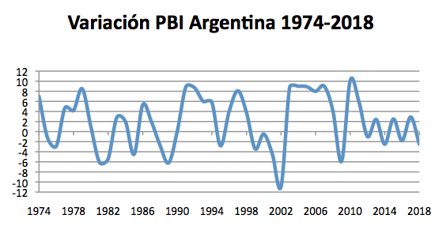

L'introduction en Bourse du navigateur Internet Netscape en 1996 aux États-Unis a donné le ton d'un mouvement spéculatif qui atteindra son apogée en Europe en 1999. À partir de mars 2000, les investisseurs se réveillent. Les cours de la Bourse dégringolent. La levée de capitaux devînt ardu. « L'éclatement de la bulle Internet » s'étale sur le printemps. Il précède la crise des technologies qui perdurera jusqu'en 2003.
La bulle Internet correspond aussi à la période qui suivi l'année 2000. Beaucoup d'entreprises technologiques réalisèrent de bonnes affaires, mais les investisseurs ont largement exagéré l'importance du « très long terme » dans leurs estimations, et négligé de calculer que certaines sociétés consommaient trop vite leur capital pour espérer atteindre un jour le point d'équilibre. Sous la pression de la remontée des taux d'intérêt à long terme (voir graphique ci-contre), la bulle finit par « éclater » à partir de mars 2000, sous forme d'un krach, s'étendant à l'ensemble des bourses et provoquant une récession économique dans ce secteur et de l'économie en général.
1.2. le début de la crise financière turque
A peine le FMI et les gouvernements du G-7 ont-ils approuvé une nouvelle ligne de crédit de 20 milliards de dollars pour l’Argentine, que la Turquie s’est trouvée plongée dans la pire crise bancaire et monétaire de son histoire. Le 1er décembre, le taux d’intérêt sur les prêts à 24 heures a atteint brièvement le niveau de 1700 %, alors qu’on s’empressait d’acheter des dollars.
Le 21 novembre, une crise dans tout le système bancaire a été déclenchée suite à la publication d’un rapport de l’Agence de régulation et de supervision bancaires (BRSA) sur la solvabilité des quatre-vingts banques privées de la Turquie, et plus spécialement de onze banques, mises de fait en état de règlements judiciaires mais qui continuent de fonctionner. Le rapport estime qu’il faudrait quelques huit milliards de dollars pour rendre à nouveau solvables dix banques qui, prises ensemble, avaient accusé en 1999 des pertes de 1,8 milliards de dollars, somme couverte par l’argent des contribuables. A peine ce rapport a-t-il été rendu public, que toutes les lignes de crédit interbancaires pour ces dix banques mentionnées dans celui-ci ont été coupées, provoquant une panique généralisée de la part des déposants, qui ne s’est toujours pas calmée. Ceci a provoqué à son tour, le 22 novembre (baptisé le « mercredi noir »), la chute de la Bourse d’Istanbul et l’effondrement des obligations d’Etat libellées en lires.
1.3. le plus haut taux historique du CAC 40 avec 6 922,33 points
2. En 2001
2.1. La crise californienne de l'énergie et l'affaire ENRON
La Silicon Valley, Hollywood ou les universités de Standford et Berkeley ont fait connaitre la Californie comme l'une des régions les plus riches et les plus développées au monde. Pourtant, il y a une dizaine d'année cet État connaissait des coupures d'électricité à répétition au point que l'état d'urgence y a été maintenu pendant plus de 2 ans... Retour sur une crise énergétique méconnue et ses origines.
La crise de l'énergie en Californie de 2000 et 2001 est une période lors de laquelle la Californie s'est trouvée en pénurie d'électricité. Bien que la Californie ait vu sa population augmenter de 13 % au cours des années 1990 et ait connu une forte croissance économique durant cette période de 10 ans, l'État n'a construit aucune nouvelle grande centrale électrique au cours de cette période. Il existe aussi d'autres facteurs qui ont engendré cette crise comme le gonflement des prix provoqué par des pratiques illégales de la compagnie Enron.
Les attentats du 11 septembre ont provoqué des pertes humaines et matérielles bien supérieures à celles de toute autre attaque terroriste de l’histoire contemporaine. La destruction de biens matériels a été estimée dans les comptes nationaux à 14 milliards de dollars pour les entreprises privées, 1.5 milliard de dollars pour les entités relevant de l’État et des collectivités locales et 700 millions pour l’État fédéral. Ces pertes matérielles se traduisent dans les comptes nationaux…. Les dépenses de sauvetage et de déblaiement ainsi que les frais connexes ont été estimés à au moins 11 milliards de dollars. Le pointe de Manhattan a perdu environ 30 pour cent de ses superficies de bureau et de très nombreuses entreprises ont disparu. Près de 200 000 emplois ont été anéantis ou délocalisés hors de New York City, au moins temporairement. Quelques semaines après les attentats, le bioterrorisme est entré en scène. Des spores d’anthrax mortelles ont contaminé le courrier et provoqué plusieurs décès. Dans le même temps, on a davantage pris conscience de plusieurs autres sources de menace. On s’est préoccupé de la vulnérabilité d’infrastructures essentielles (centrales électriques, installations nucléaires, usines chimiques, barrages, ponts, pipelines et réseaux d’adduction d’eau). La menace d’hyperterrorisme n’était plus le fait de la fiction seule.
La crise argentine est une grande crise économique, politique et sociale survenue en Argentine entre 1998 et 2002, et dont certaines conséquences se prolongent jusque dans les années 2010. La cause immédiate de la crise est le choix des autorités argentines, au début des années 1990, d'utiliser la technique du currency board (ou caisse d'émission) lié directement au dollar pour stabiliser une économie marquée par une inflation presque permanente depuis la Seconde Guerre mondiale.

Ce système très particulier permet l'embellie des années 1990, mais se révèle particulièrement dangereux face aux mouvements erratiques et violents du marché des changes flottants qui suivent la crise économique asiatique. Il sombre lorsque l'économie mondiale entre en récession avec la crise de la bulle Internet au début des années 2000. La récession amplifiée par les mesures d'économie drastiques exigées par le Fonds monétaire international (FMI), en contrepartie de son aide en dollars, est extrêmement violente et entraîne une hausse spectaculaire de la pauvreté ainsi que d'importants mouvements sociaux et de rapides changements politiques.
Le plan argentin de conversion de dette a pour conséquence des pertes sévères pour les créanciers privés. Le pays sort de la partie la plus aigüe de la crise dès 2003. Les conséquences les plus durables sont les difficultés récurrentes des gouvernements à financer leurs budgets, le départ du pays de certains investisseurs industriels, une nette diminution de la confiance des créanciers privés et de longs contentieux avec des fonds vautours américains, contentieux qui se poursuivent jusque dans les années 2010.
3. En 2002
3.1. L'introduction de la monnaie unique européenne billets et pièces
le 1er janvier 1999, l'euro devient la monnaie unique de onze pays européens et les taux de change des monnaies participantes sont fixés de manière irrévocable (1 euro = 6,55957 francs français) ; - le 1er janvier 2002, les billets et pièces en euros sont mis en circulation.
3.2. La faillite de télécommunications américain WorldCom
Le 25 juin 2002, la nouvelle fait l'effet d'un coup de tonnerre dans le secteur des télécoms: Worldcom, le second opérateur longue distance des États-Unis, avoue officiellement avoir gonflé artificiellement ses bénéfices de quelque 3,8 milliards de dollars.
Le scandale provoque une mini-tempête sur toutes les places boursières dans le monde et déprime un peu plus l'ensemble du secteur des nouvelles technologies. La douche froide frappe également le cabinet d'audit Arthur Andersen, qui a validé les comptes truqués.
Pris dans la tourmente et accablé par les dettes, le géant des télécoms se met en faillite à peine un mois après la révélation de ces manipulations comptables. Il s'agit de la plus grande banqueroute de toute l'histoire industrielle.
4. En 2003
4.1. Une économie mondiale dans la tourmente
Jusqu'au milieu du printemps de 2003, l'économie mondiale a vécu à l'ombre des tensions géopolitiques, les incertitudes liées au conflit irakien continuant de favoriser les comportements attentistes des agents et de tendre les prix sur les marchés pétroliers. La rapidité de la guerre a permis, sur le moment, une détente des cours du pétrole et un regain de confiance, quoique modeste, chez les entreprises et les ménages.
Cette année, de nombreuses entreprises ont subi de lourdes pertes ou ont même fait faillite. Par exemple,
L'année 2004 fût marquée par un certain rebond économique et la fin de la récession du début des années 2000. Le bond spectaculaire des prix du pétrole au cours de l'année pesa cependant sur la reprise de l'économie mondiale. De forts contrastes demeurent selon les régions:
L'économie américaine progresse à un rythme soutenu. L'investissement des entreprises se maintient à un fort niveau mais la consommation des ménages pâtit de la forte hausse des prix du pétrole. Les créations d'emplois se maintiennent à un fort niveau.
L'économie asiatique (et en particulier chinoise) maintient un fort dynamisme malgré un léger retrait par rapport à 2003.
L'Europe continentale, malgré un rebond par rapport à 2003, demeure à la traîne. Après un bon démarrage en début d'année la dynamique s'est essoufflée : de fortes divergences demeurent entre les pays bénéficiant d'une demande interne bien orientée (France, Espagne) et ceux s'appuyant plutôt sur le rebond des exportations (Allemagne).
5.2. Le séisme et tsunami de 2004 dans l'océan Indien
Le 26 décembre 2004, un tsunami ravage les côtes des pays de l'Océan Indien comme l'Indonésie, la Malaisie, la Thaïlande, l'Inde et même la Somalie. Le bilan fait état de plus de 250.000 personnes tuées ou disparues. Les dégâts matériels sont considérables tandis que tout l'écosystème côtier est altéré.
Un an après, les conséquences sociales, économiques et environnementales de cette catastrophe naturelle majeure sont encore très difficilement quantifiables. L'ONU estime tout de même que les dommages globaux pourraient excéder les 10 milliards de dollars. L'heure est à la reconstruction des lieux de vie : habitations, écoles, hôpitaux mais aussi hôtels et restaurants pour relancer l'économie touristique vitale pour la plupart des pays touchés.
Sur le plan environnemental, tout reste à faire. Si le tremblement de terre de grande profondeur à l'origine du tsunami ne semble pas avoir affecté le milieu marin au large, les zones côtières, en revanche, ont été altérées : récifs coralliens détruits par la violence des flots ou par les débris charriés par la mer, mangroves dévastées, terrains agricoles inondés, plages érodées, etc.
6. En 2005
6.1. L'entrée en vigueur du protocole de Kyoto
Le protocole de Kyoto est un accord international visant à la réduction des émissions de gaz à effet de serre et qui vient s'ajouter à la Convention-cadre des Nations unies sur les changements climatiques dont les pays participants se rencontrent une fois par an depuis 1995.
Au 18 novembre 2005, 182 pays sur 192 pays indépendants ont ratifié, accepté, accédé ou approuvé le protocole.
6.2. L'ouragan Katrina dévaste le Sud-Est des États-Unis
L’ouragan Katrina, de la saison cyclonique 2005 dans l'océan Atlantique nord, est l'un des ouragans les plus puissants de l'histoire des États-Unis et l'un des six ouragans les plus forts jamais enregistrés. Environ 1 836 personnes sont mortes, victimes de l'ouragan et des très fortes inondations, faisant de Katrina l'ouragan le plus meurtrier depuis Mitch en 1998. Les dégâts sont estimés à plus de 108 milliards de dollars, soit environ le quadruple de ceux causés par Andrew en 1992.
L’ouragan Katrina a déjà eu un impact économique significatif mais d’autres sur la durée sont encore prévus. La plupart des experts s’accordent à penser que Katrina sera la catastrophe naturelle la plus coûteuse de l’histoire des États-Unis.
7. En 2006
7.1. Les États-Unis et la Chine au cœur de l'économie mondiale
La croissance américaine est restée très élevée, à un rythme de près de 3,5%, à nouveau alimentée par la consommation des ménages et par l'investissement des entreprises. Toutefois, l'un des principaux facteurs à l'origine de la flambée dépensière des ménages au cours des années passées s'est quelque peu atténué : le marché immobilier, qui avait connu une croissance euphorique, permettant aux ménages de renégocier leur prêts hypothécaires, s'est en effet replié. La poursuite du resserrement monétaire opéré par la banque centrale américaine, la Réserve fédérale, a sans doute contribué à ce ralentissement : à partir du mois de juin, le taux directeur, dit des « Fed funds », a été relevé à plusieurs reprises, passant au total de 4,25% à 5,25% sur l'année.
De l'autre côté de l'océan Pacifique, le dynamisme chinois ne s'est pas réfréné. L'activité de la Chine a crû de plus de 10% sur l'année, signe d'une véritable surchauffe économique. Ce pays a de nouveau été le chef d'orchestre des économies voisines de l'Asie émergente et confirmé son rôle de pont incontournable entre les exportations des pays asiatiques et les importations des pays industrialisés. La Chine a par ailleurs fortement continué de bénéficier de la délocalisation d'unités de production originaires des pays développés, notamment du Japon et des États-Unis. Grâce à l'accumulation d'excédents courants massifs, elle a poursuivi la consolidation de ses réserves de change, en les portant au niveau sans précédent de plus de 1 000 milliards de dollars.
Selon les estimations de la Banque mondiale, l'explosion de l'activité de la Chine a été telle qu'elle se serait hissée en 2006 au rang de quatrième puissance économique mondiale, derrière les États-Unis, le Japon et l'Allemagne, et devant la Grande-Bretagne et la France.
7.2. La finance du carbone
7.3. L'ascension du prix du pétrole et des taux d'intérêt
Les prix du pétrole ont été portés dans leur ascension par une forte demande, notamment du côté de la Chine. À cet égard, il convient de noter que la boulimie chinoise a aussi concerné la plupart des matières premières, et notamment les métaux pour lesquels la Chine représente désormais environ 20 p. 100 de la demande mondiale. Du côté de l'offre de pétrole, des tensions sont apparues du fait du niveau trop faible des capacités de production résiduelles.
Malgré la poursuite de la flambée de l'or noir, les pressions inflationnistes sont restées contenues. Cette moindre dépendance des prix à la consommation vis-à-vis de ceux de l'énergie trouve son origine dans plusieurs facteurs. D'une part, les pays importateurs de pétrole ont acquis avec le temps une plus grande indépendance énergétique, grâce notamment à la diversification de leurs approvisionnements en la matière. D'autre part, l'année 2006 a vu une généralisation de la remontée des taux, ce qui a constitué un élément modérateur de l'inflation mondiale. Cela étant, ce resserrement monétaire n'a pas pleinement joué, en raison de taux d'intérêt à long terme restés globalement très bas, traduisant un aplatissement généralisé des courbes de taux.
L'impact sur l'activité, a priori négatif, de la flambée pétrolière et des conditions de crédit plus restrictives dues à la remontée des taux d'intérêt aura été tempéré par différents facteurs. D'une part, les politiques budgétaires sont restées globalement accommodantes ; d'autre part, la poursuite de la hausse des actifs, tels que l'immobilier, a continué de profiter aux ménages dans certains pays (notamment anglo-saxons) : la hausse des prix de l'immobilier permet aux ménages de renégocier leurs emprunts hypothécaires à des conditions plus favorables.
8. En 2007
8.1. L'Europe sur les sentiers de la croissance
Les turbulences financières se sont manifestées au moment où l'Europe bénéficiait de sa croissance la plus forte depuis une décennie, à un rythme soutenu de 2,5% après 2,8% en 2006.
Longtemps en retrait, en raison des effets de la réunification de 1991, l'économie allemande a tiré son épingle du jeu, la croissance s'établissant a 2,4%.
La croissance française s'est quant à elle maintenue tout juste à 2%, la Coupe du monde de rugby n'ayant guère profité à la consommation des ménages, contrairement à la Coupe du monde de football en Allemagne l'an passé.
Comme en 2006, la croissance espagnole est restée soutenue, mais elle a continué d'être nourrie quasi uniquement par le dynamisme de la demande interne.
Au Royaume-Uni, la consommation des ménages n'a pas fléchi et, malgré de forts remous du côté du secteur bancaire, l'économie outre-Manche a maintenu un taux de croissance de 3%.
8.3. L'urgence environnementale
La globalisation des échanges commerciaux et celle, plus récente, de la finance n'avaient pas encore ouvert la voie à une prise en compte globale des contraintes environnementales. Alors que l'accélération du changement climatique s'est fait ressentir ici et là au travers de la multiplication des catastrophes naturelles, un consensus encore mou se dégageait au sein des grandes puissances pour amorcer une réduction massive des émissions de gaz à effet de serre. La conférence organisée à Bali en décembre s'annonçait prometteuse d'une responsabilisation collective quant aux problématiques de l'environnement, et, pourquoi pas, d'un premier élan à l'échelle planétaire.
9. En 2008
9.1. Durcissement de la crise des « subprimes »
The Causes and Effects of the Financial Crisis 2008
L'aggravation de la crise financière des subprimes semble avoir sonné le glas du modèle économique qui prévalait depuis quelques années, centré autour d'une très forte consommation des ménages américains. La sophistication financière avait notamment permis d'accentuer le dynamisme des dépenses des ménages américains grâce aux mécanismes de refinancement hypothécaires : l'octroi de prêts hypothécaires avait été grandement facilité par la capacité des banques commerciales américaines et des agences comme Freddie Mac et Fannie Mae à redistribuer le risque aux investisseurs financiers internationaux via les mécanismes dits de titrisation.
Quelques événements retentissants ont nourri la crise de confiance : ce fut le sauvetage de la banque Bear Stearns par J. P. Morgan en mars et, surtout, la faillite de Lehman Brothers en septembre. Les inquiétudes sur le marché du refinancement hypothécaire ont précipité la mise sous tutelle de Freddie Mac et Fannie Mae. Enfin, signe que les investisseurs ont aussi fortement pâti de la crise, le premier assureur mondial, American International Group (A.I.G.), s'est trouvé en très grande difficulté et a été mis sous tutelle publique.
Le commerce mondial a connu une contraction historique de 12% sur l'année 2009. La demande mondiale en biens et services a accusé un plongeon historique en début d'année. Cet effondrement du commerce mondial, qui est allé bien au-delà de celui du P.I.B., s'explique en grande partie par la baisse de la demande dans tous les pays, le repli de l'activité manufacturière et une contraction violente des crédits mondiaux. Par la suite, le commerce mondial a nettement repris durant l'été, tiré par les importations des pays émergents et plus particulièrement des pays asiatiques. En particulier, la demande chinoise a été soutenue par la mise en œuvre d'un plan de relance et par l'assouplissement des conditions d'accès au crédit. La demande mondiale a également été portée par l'intensification des échanges de produits automobiles à la suite de la mise en œuvre de primes à la casse dans de nombreux pays.
10.2. Vers une économie mondiale plus verte
Les préoccupations liées à la préservation de l'environnement ont été placées au cœur du débat économique, davantage que lors des années précédentes. De l'avis de la majorité des experts, le réchauffement climatique observé sur la période récente résulte de la forte accélération de la concentration de gaz à effet de serre dans l'atmosphère.
La conférence des Nations unies tenue à Copenhague sur le climat en fin d'année a permis de timides avancées avec un accord non contraignant sur les engagements des États à réduire les émissions de gaz à effet de serre et sur l'aide technique et financière que les pays développés devraient apporter au monde émergent, pour promouvoir l'utilisation de technologies à faible bilan carbone et de lutter contre la déforestation.
Le prochain défi se trouve sans doute dans le changement de paradigme que constituerait le passage d'une croissance sans frein vers un modèle de croissance mondiale plus respectueux de l'environnement.